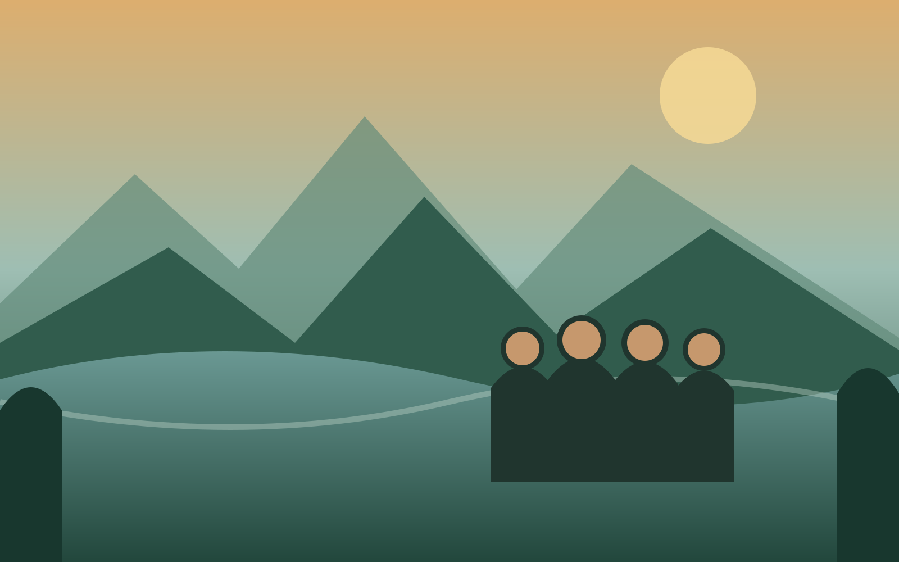
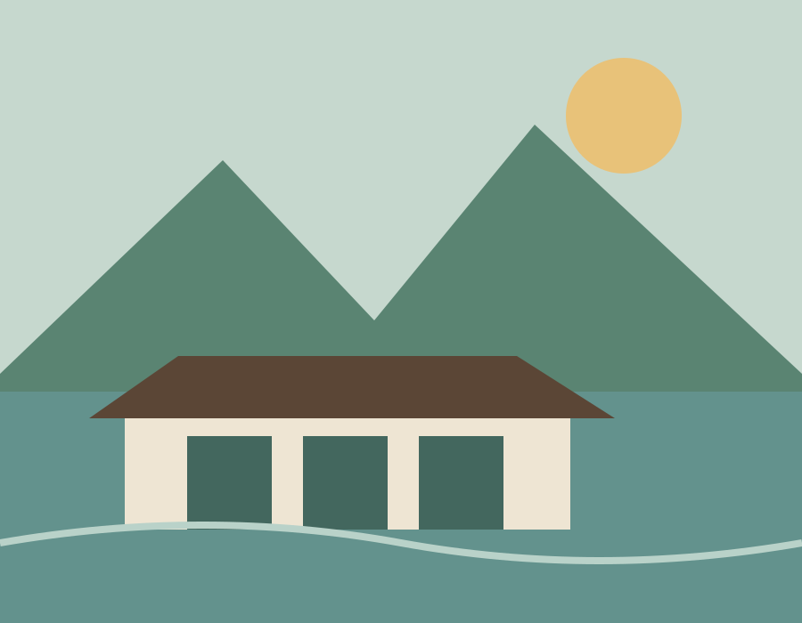
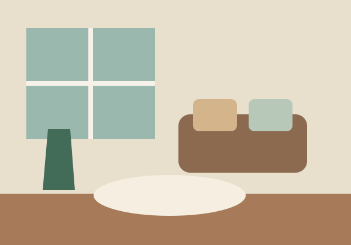
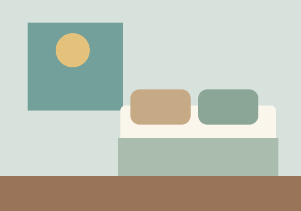
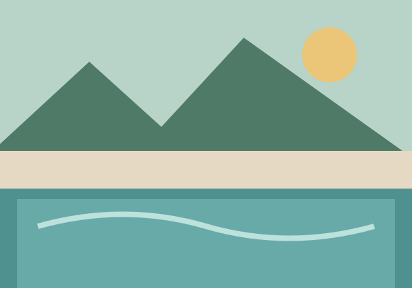

2026 考艾・曼谷家庭旅行
沖泰菲堂之
二度泰國
2026.11.12 — 2026.11.16
這次不趕景點，一起住進山林與湖景裡，
慢慢吃飯、散步、聊天，好好享受家庭假期。
距離出發還有 計算中
一起慢慢旅行
這趟旅行
四個人、五天四夜，從台北飛往曼谷，再搭專車住進考艾的山林湖景。
台北桃園機場
飛行約 3 小時↓
曼谷素萬那普機場
專車約 2.5–3.5 小時↓
考艾山林湖畔 3 晚
專車返回↓
曼谷市區 1 晚 → 台北
為什麼選考艾
離曼谷不遠的
山林度假地
考艾位於曼谷東北方，是泰國著名的自然與度假區。這裡有森林、山景、湖泊、咖啡廳與國家公園，比曼谷涼爽，也不像熱門海島那麼擁擠。
這次不以趕景點為目標，而是住進湖畔度假村，保留足夠時間散步、喝咖啡、享受早餐、泳池與一家人相處的時間。
山林與湖景
住進自然裡，窗外就是放鬆的風景。
11月氣候舒服
早晚較舒適，適合慢慢散步。
專車接送
不必拖行李頻繁轉乘。
適合長輩
行程留白，累了隨時休息。
航班與交通
一路都有人接送
航班時間皆為當地時間；台灣比泰國快 1 小時。
去程・11月12日星宇航空
09:25台北桃園
→12:35曼谷素萬那普
當地時間｜入境取行李後，專車直達考艾；第一天不排正式景點。
回程・11月16日星宇航空・里程兌換
13:45曼谷素萬那普
→18:25台北桃園
當地時間｜最後一晚住曼谷，回程不用從考艾趕往機場。
移動原則：舒服、簡單、不轉車
- 機場 ↔ 考艾：預約私人專車
- 考艾當地：包車或飯店車輛
- 曼谷市區：Grab 或請飯店叫車
- 不安排火車、小巴或頻繁轉乘
住得舒服，也是行程
住宿介紹
考艾・3 晚
阿塔湖畔度假套房飯店
ATTA Lakeside Resort Suite
前三晚住在考艾湖畔的家庭頂樓套房。房內有兩間臥室、客廳、用餐空間、陽台與私人泳池，一家人住在一起，也保有各自休息的空間。
- 入住
- 11月12日
- 退房
- 11月15日
- 房型
- 家庭頂樓套房
Family Penthouse Suite - 旅客
- 4 位成人

湖景山林家庭套房獨立客廳私人泳池飯店早餐湖畔散步SPA整日度假



曼谷・最後 1 晚
曼谷最後一晚住宿｜確認中
兩間都是舒服的收尾選擇，最後確認後，網站只會顯示選定的飯店。
最後確認後更新
5天4夜
每天都留一點空白
不把時間塞滿，活動都能依當天精神與天氣調整。
DAY 111月12日・星期四從台北出發，住進考艾山林
從台北出發，住進考艾山林
上午搭星宇航空前往曼谷，抵達後由專車直接接往考艾。途中視情況休息或簡單用餐，傍晚入住 ATTA 家庭頂樓套房。晚上只熟悉房間、看湖景與休息。
放心：第一天以移動和休息為主，不需要趕行程。
DAY 211月13日・星期五完整享受湖畔度假村的一天
完整享受湖畔度假村的一天
悠閒吃早餐，在湖邊散步、拍照或回房休息。下午可以使用私人泳池、安排 SPA，也可以在陽台喝咖啡聊天；晚上在度假村或附近餐廳用餐。
放心：今天不搭長途車，也沒有必須完成的景點。
DAY 311月14日・星期六考艾山林輕旅行
考艾山林輕旅行
上午保留給飯店和早餐。中午前後搭包車半日遊，可選國家公園容易抵達的景點、景觀咖啡廳、葡萄園或農場；不長時間健行，也不一次排太多景點。
放心：觀光以短程、好走、可以隨時休息為原則。
DAY 411月15日・星期日告別考艾，返回曼谷
告別考艾，返回曼谷
享用最後一次度假村早餐，接近中午退房並搭專車返回曼谷。下午入住市區飯店；晚上可依住宿地點逛 One Bangkok，或到昭披耶河岸散步吃晚餐。
放心：抵達曼谷後不排太多行程，依體力自由調整。
DAY 511月16日・星期一悠閒早餐，返回台北
悠閒早餐，返回台北
吃早餐、整理行李，約 09:30–10:00 從飯店前往機場。搭乘 13:45 星宇航空返台，預計 18:25 抵達台北。
放心：最後一晚住曼谷，回程不用長途趕往機場。
最期待的畫面
旅程亮點
湖畔家庭 Penthouse
住在一起，也各自睡得舒服。
客廳與私人泳池
不出門，也有共享的度假時光。
完整度假村日
不用趕車，早餐可以慢慢吃。
考艾山林輕旅行
短程、好走，咖啡與風景都剛好。
自然風格全家福
湖邊、草地或陽台拍攝 60–90 分鐘，規劃中。
曼谷舒服收尾
最後一晚回市區，輕鬆搭機返台。
天氣與穿著
11月的考艾，
早晚比較舒服
白天通常溫暖，山區早晚可能較涼。出發前一週再依最新天氣預報調整，不需要現在準備得太緊張。
- 短袖或薄長袖
- 一件薄外套
- 好走、防滑的休閒鞋
- 帽子、防曬與防蚊用品
- 泳衣與拖鞋
- 常用藥物
行前小提醒
簡單準備，放心出發
時間
泰國比台灣慢 1 小時
網路
可使用泰國 eSIM 或網卡
交通
長途移動以預約專車為主
付款
大店可刷卡，小店準備少量泰銖
行李
薄外套、泳衣、防曬、防蚊與藥物
飲食
乾淨、舒適、有座位為原則
行程
依精神與天氣隨時調整